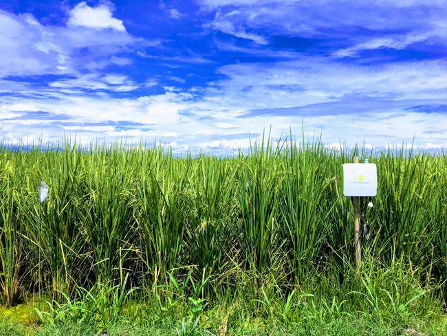
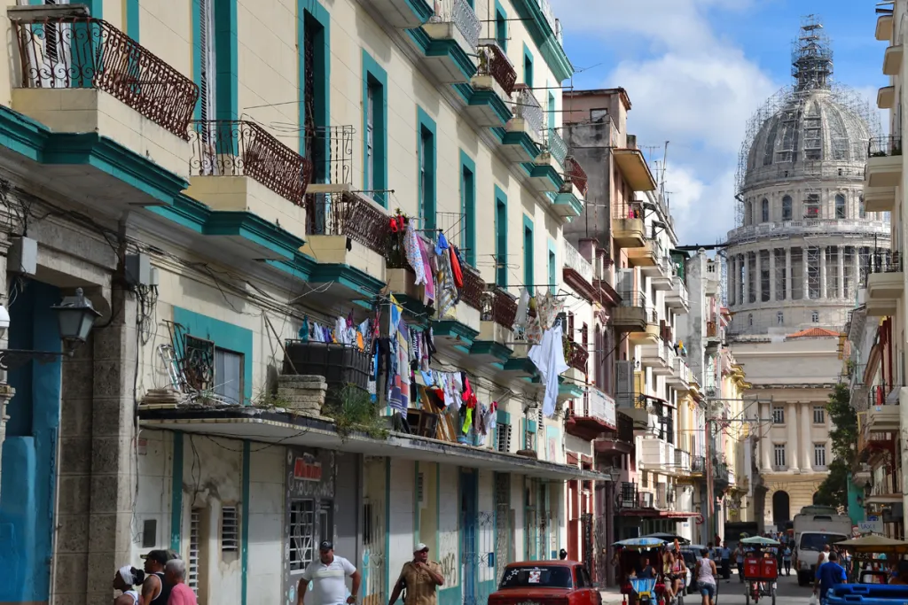

メキシコ湾の近くにあります
西洋レトロを味わいたい人におすすめ
年間１００万人に愛される世界的に有名なビーチ
キューバは２０１１年に行われた共産党大会において
経済と社会に関する改革を進めていくことが示された
農業開発では※を中心とした自給率上昇に取り組んでいる
環境保全や官民連携型の協力が期待できる保健医療分野の推進を促している
愉快、情熱的などの言葉で形容されるキューバの人たちですが
他にも様々な異国情緒溢れる家々が広がってます/p>
内陸部には山脈が多く
数多くの世界遺産があります